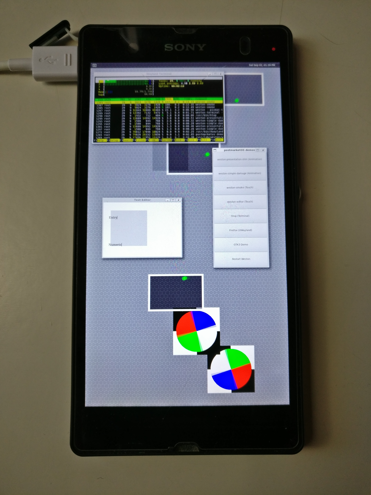

Sony Xperia Z (sony-yuga)
|
 Sony Xperia Z running Weston | |
| Manufacturer | Sony |
|---|---|
| Name | Xperia Z |
| Codename | sony-yuga |
| Released | 2013 |
| Category | testing |
| Original software | Android 4.1.2 on Linux 3.0.31 |
| Hardware | |
| Chipset | Qualcomm Snapdragon S4 Pro (APQ8064) |
| CPU | Quad-core 1.5 GHz Krait |
| GPU | Adreno 320 |
| Display | 1080x1920 TFT |
| Storage | 16 GB |
| Memory | 2 GB |
| Architecture | armv7 |
{kind=link}
| USB Networking |
Works
|
|---|---|
| Flashing |
Works
|
| Touchscreen |
Works
|
| Display |
Works
|
| WiFi |
Works
|
| FDE | |
| Mainline |
Partial
|
| Battery | |
| 3D Acceleration | |
| Audio | |
| Bluetooth | |
| Camera | |
| GPS | |
| Mobile data | |
| SMS | |
| Calls | |
| USB OTG | |
| NFC | |
| Accelerometer | |
|---|---|
| Magnetometer | |
| Ambient Light | |
| Proximity | |
| Hall Effect | |
| Barometer | |
| Power Sensor | |
| Camera Flash | |
|---|---|
| Keyboard | |
| Touchpad | |
| USB-A | |
| HDMI/DP | |
| Ir TX | |
| Ir RX | |
| Stylus | |
| Haptics | |
| Ethernet | |
| FOSS bootloader | |
|
This device is based on the Snapdragon 600. See the SoC page for common tips, guides and troubleshooting steps |
Contents
Contributors
- wfranken (porting and testing)
- ollieparanoid
- ata2001
- opendata
Device knowledge
Special keycombo's
- Boot to bootloader (fastboot): unplug device, hold volume up and plug usb into device. LED turns blue when in fastboot
- Boot to recovery(when flashed to FOTAkernel only?): repeatedly press volume up during bootup
- Reboot if stuck: hold volume up and power button till the phone vibrates once
- Shutdown phone: hold volume up and power button till phone vibrates three times
Notification LED information
- Constant blue LED: fastboot mode
- Slowly blinking red LED when plugged in: battery cannot hold any charge/battery charge is too low for booting
- Blinking red LED when trying to boot: Cannot boot, maybe offsets are wrong?
- Constant red LED on while plugged in: charging
Non-standard notes
The Xperia Z does not have a recovery partition, so flashing PostmarketOS erases any recovery you have installed. Instructions across the internet for reinstalling a custom recovery are almost all incorrect.
To install a custom recovery on the Xperia Z:
- put the device in fastboot mode
- run
fastboot flash boot recovery.img(replacerecovery.imgwith the filename of your recovery of choice) - run
fastboot rebootto reboot into the recovery
This is also the reason why LineageOS boot.img is far larger than postmarketOS boot image (the recovery is inside it).
Current state
Downstream
The downstream kernel is based on the LineageOS Sony APQ8064 kernel. The kernel version is 3.4.0 and below is described what currently works, doesn't work and what is not tested yet.
What works
- charging
- network through USB
- telnet in initramfs
- ssh
- adjusting the led, torch and the lcd backlight
- touchscreen
- display (Weston UI was tested)
- Wifi
Known issues
- Splash screens works but disappears long before Weston comes up
- FDE does not work, password unlock screen does not appear
What has not been tested
- Bluetooth
- Mobile network
- Sound
- Phone calls
- SD card
Mainline support
It is possible to boot the device using the mainline kernel for devices with a Qualcomm APQ8064 SOC. Below we describe what works, what doesn't and what still needs to be tested. These tests are done on qcom-apq8064-v5.10 branch of APQ8064 kernel.
What works
- network through USB
- telnet in initramfs
- ssh
- Wifi (more or less): USB stops working when Wifi gets enabled. (to start wifi you should run 'echo start > /sys/class/remoteproc/remoteproc0/state')
Known issues
- Display does not work
- Charging does not work: after some time the device shuts down and starts charging very slowly. This is because charging is divided in HW part and SW part. The HW part of charging happens when the battery is so low that it cannot boot, thus the device will charge until a critical charge so it can at least boot. When the device boots up the SW will take over the charging. Because the mainline kernel currently does not have a power supply configured for this devices (the pm8921 PMIC power charger is not yet supported in mainline), the battery won't charge after booting up and slowly drain until the device shuts down due to low charge.
- USB stops working when Wifi gets enabled.
What has not been tested
Everything else
Install
Installation procedure
Follow the Installation guide
Troubleshooting
- If you get a slowly blinking red LED when trying to charge, this could mean your battery does not get charged. You have then have two options:
- Open the back (eg. with a hairdryer) and try to unplug and plug the battery
- If all else fails: buy a new battery
- If you don't get into fastboot mode (blue notification LED): try another USB cable.
Hardware details
PMIC: pm8921
The Power Management IC (PMIC) of this device is a pm8921. It is in control of:
- voltage regulation
- power charging
- ...
References
See also
- !500 Initial merge request
- Device package
- Kernel package